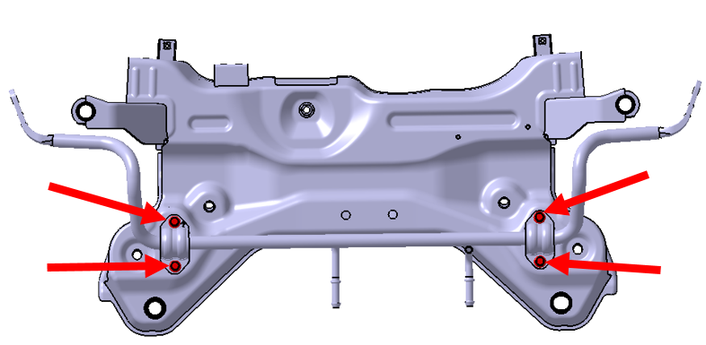
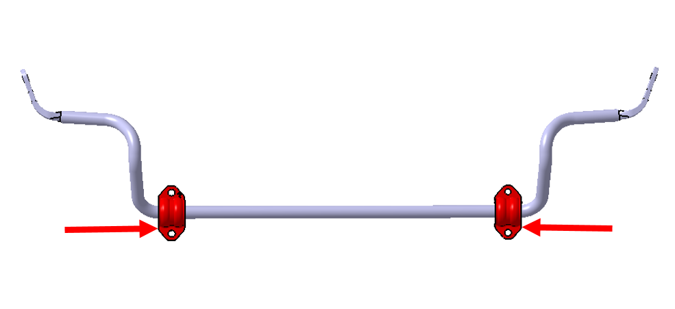

Снятие
Выполнить Подъем автомобиля, Снятие колеса. Ссылка: Колеса и шины
Выполнить Снятие Передний подрамник в сборе. Ссылка: Передний подрамник в сборе
Отвернуть болты крепления кронштейнов переднего стабилизатора поперечной устойчивости к переднему подрамнику (по 2 шт. слева и справа), момент затяжки: 65 ± 5 N·m.

Извлечь Передний стабилизатор поперечной устойчивости в сборе (включая кронштейн стабилизатора и втулку стабилизатора).
Выполнить Снятие кронштейна переднего стабилизатора (втулка стабилизатора вулканизирована единой деталью со стабилизатором и не демонтируется).

Установка
Установка выполняется в порядке, обратном снятию.